니즈를 읽고, 결과로 만드는 디자이너
복잡한 요구사항 속에서 핵심을 찾고,
보기 좋은 디자인을 넘어 실제로 쓰이는 결과물을 만듭니다.
Experience
국립 태권도박물관 활동지 제작
인천 청년마음건강센터 교육자료 제작
네오엔터디엑스 홈페이지 제작 및 SNS 컨텐츠 제작
한국관광공사 SNS 컨텐츠 제작
유즈어스, 데이타트리플 반응형 홈페이지 제작
비오큐코퍼레이션 남양유업 인스타그램 오피셜계정 컨텐츠 제작
마르체베베/라이프굿 브랜드 디자인 및 상세페이지 작업
국민카드 스타샵 대행사 POP, 포스터 등 홍보물 제작
이베이코리아 카드전략팀 프로모션페이지 디자인 및 퍼블리싱
Skills
Little Inspirations
Learning
(NCS)모바일 웹&앱 디자인 (UI/UX 디자인) 수료
장안대학교 미디어스토리텔링과 (Attended)
Credentials
컴퓨터그래픽운용기능사
GTQ Photoshop Level 1
낙서에서 콘텐츠까지
어릴 적 저는 눈에 보이는 모든 여백을 그림판처럼 사용하던 아이였습니다.
소파와 커튼 대신 스케치북을 얻은 뒤로, 그림은 제게 가장 자연스러운 표현 방식이 되었습니다.
이후 이야기를 만들고 콘텐츠로 구성하는 과정을 배우며,
그림은 단순한 취미를 넘어 사람에게 전달되는 하나의 언어가 되었습니다.
지금은 그 언어를 웹사이트, 상세페이지, 프레젠테이션, 브랜드 콘텐츠로 확장하며
필요한 메시지를 가장 알맞은 형태로 정리하는 디자이너로 일하고 있습니다.

My Design Direction
저는 디자인을 단순히 보기 좋게 꾸미는 일이 아니라,
필요한 정보를 더 쉽게 이해하도록 정리하는 일이라고 생각합니다.
그래서 작업을 시작할 때 가장 먼저 보는 것은 취향보다 방향입니다.
누가 보고, 무엇을 이해해야 하며, 어떤 행동으로 이어져야 하는지 고민합니다.
바른디자인은 화려함보다 정확함에 가깝고,
니즈를 아는 디자인은 결국 사람을 이해하는 일에서 시작됩니다.